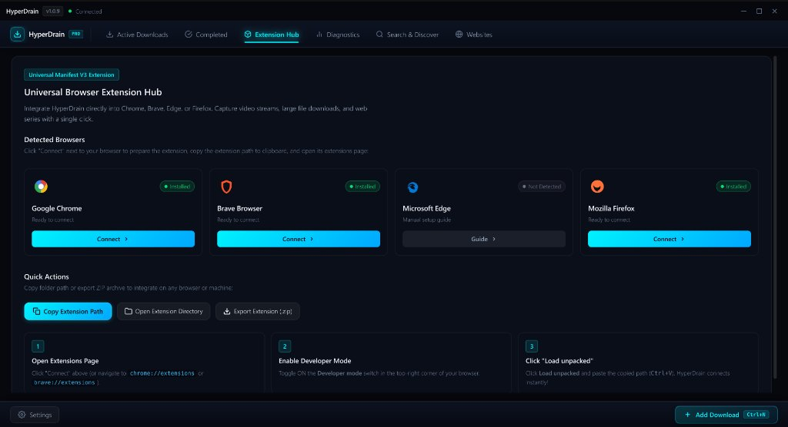
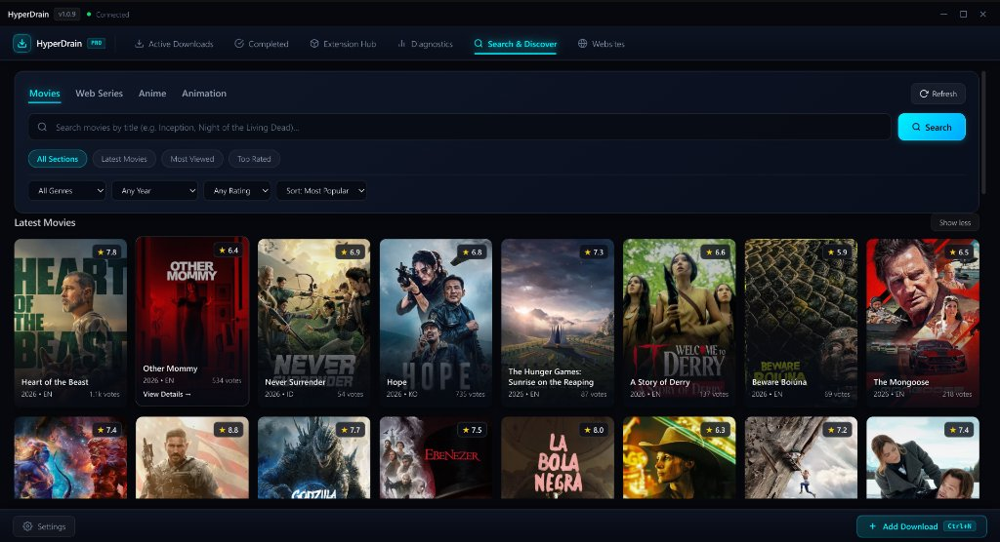
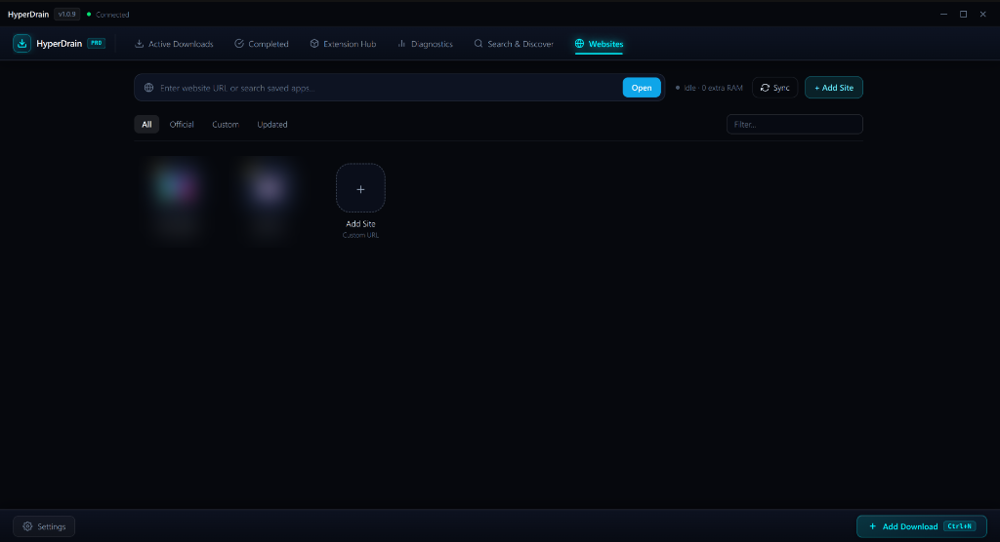

32-stream downloads that never break on slow links.
Built for massive archives, ISOs, and media streams on unstable connections. HyperDrain pre-allocates disk space with
fallocate, writes 32 parallel HTTP streams via WriteAt, and checkpoints offsets to SQLite WAL every second.
This initial installer download streams straight from GitHub's global CDN (objects.githubusercontent.com) via your browser. Once installed and paired with Extension Hub, future large downloads hand off to HyperDrain's 32-stream Go engine.
HyperDrain v1.0.9 — 60s real-time network & disk telemetry with 32-stream task queue.
Every control built around throughput and recovery
Four dedicated workspaces inside a single frameless desktop window—no background bloat.
01 · Active Downloads
Real-time throughput & 32-stream telemetry
Track live network speed, actual disk write throughput, and active TCP worker count on a 60-second canvas graph. Pause, resume, or recover interrupted transfers across reboots without losing a single byte.
HTTP/2 Transport
SQLite WAL
Mini Popup Mode
02 · Extension Hub
1-click Manifest V3 browser handoff
Connect Chrome, Brave, Edge, or Firefox directly from the app or export the extension ZIP to share. Session cookies, Referer, and User-Agent headers forward automatically so authenticated links never hit 403 errors.
Manifest V3
Cookie & Header Relay
hyperdrain://wake

03 · Search & Discover
Structured catalog browsing & filtering
Filter media catalogs by category, genre, release year, and rating right inside the desktop shell—built for fast metadata lookup without juggling cluttered browser tabs.
Multi-Filter Index
Category Tabs
Direct Queueing

04 · Websites
Embedded Chromium browser with stream detection
Open any web page directly inside HyperDrain's isolated browser view with automatic HLS/DASH .m3u8 and .mp4 stream sniffing—zero browser extension setup required.
HLS / DASH Sniffer
Custom Shortcuts
Zero Extra RAM Idle

Core Architecture
Engineered in Go beneath a native Electron shell
Why HyperDrain stays fast and reliable where single-stream browser downloads stall.
32-Stream WriteAt Engine
Opens up to 32 parallel HTTP/2 connections per file and writes chunks directly to their final byte offsets with pwrite—no post-download merging delay on 30 GB files.
Zombie Watchdog & SQLite WAL
Detects stalled sockets within 10 seconds, respawns fresh ranges cleanly, handles HTTP 429/503 with exponential jitter backoff, and persists progress every second.
Universal Extension Hub
Detects installed Chromium and Firefox browsers locally, copies the unpacked extension path in one click, and wakes the background daemon via hyperdrain://wake.
Stream Sniffer & Auto-Extractor
Captures multi-quality video and audio streams in the built-in browser and unpacks multi-gigabyte ZIP and RAR archives asynchronously on completion.
Auto-Synced from GitHub
All Releases & Installers
Automatically pulls the latest tags, .AppImage / .deb packages, and changelogs from darkangle4022211-cpu/hyperdrain.